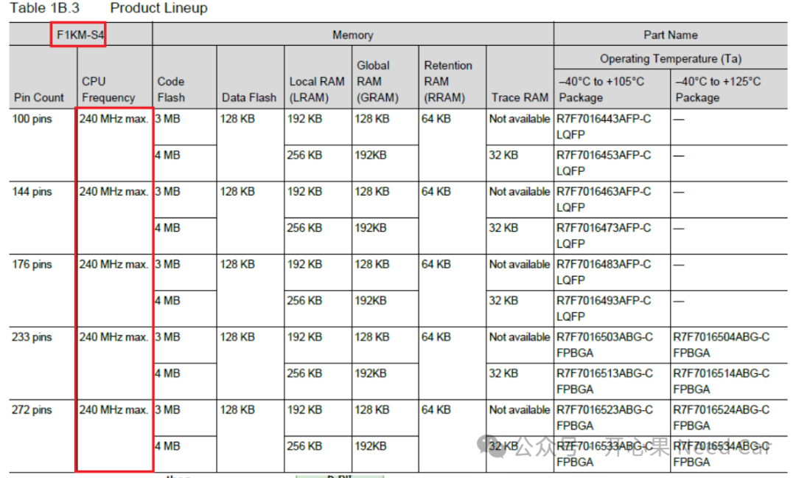
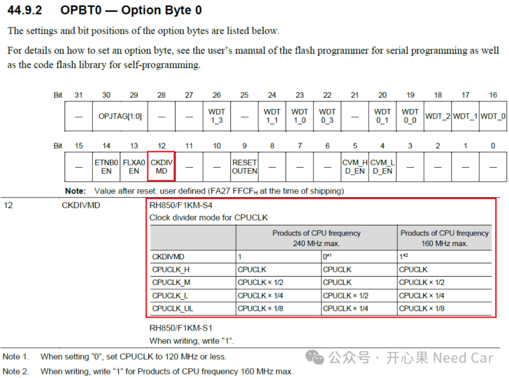
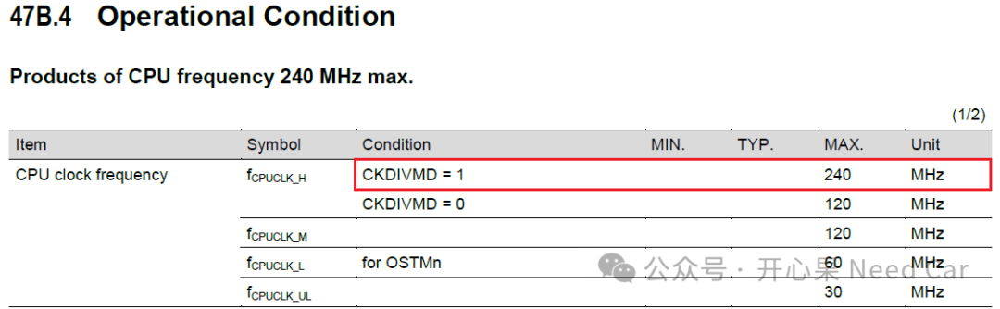
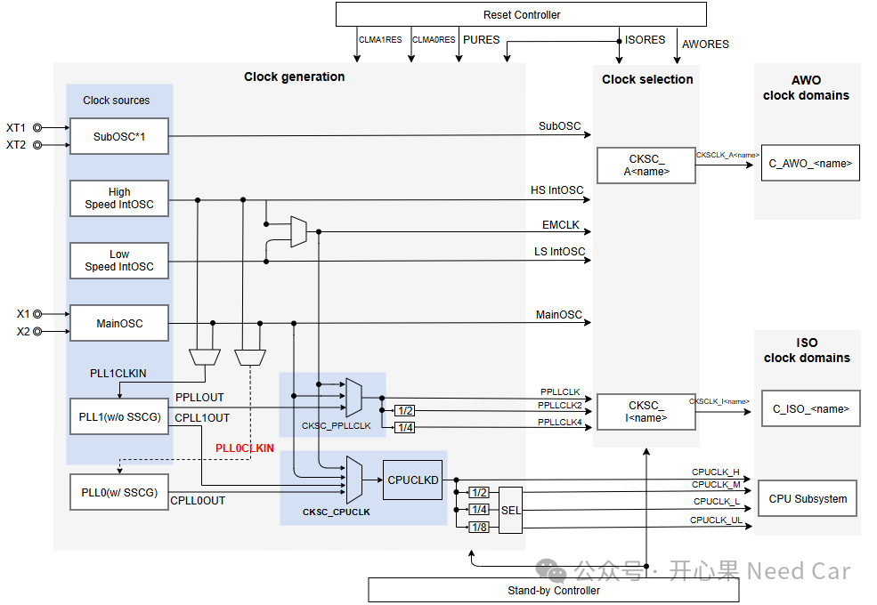
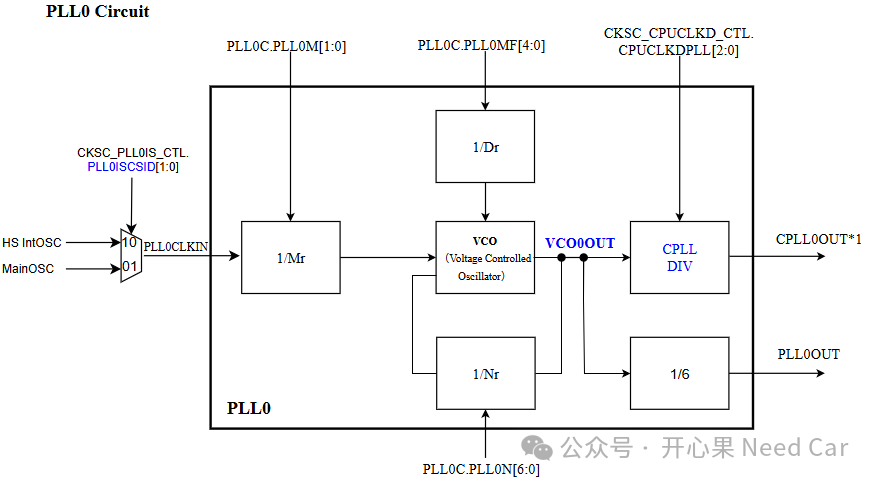

开心果 Need Car · 2026-02-06T06:22:00+08:00 · 微信原文
CPU频率（主频）指的是处理器每秒钟可以执行的时钟周期数，单位通常是MHz或GHz。每个时钟周期是CPU执行指令的基本节拍，而主频决定了指令执行速度。主频越高，理论上每秒可以完成更多指令，程序运行速度更快。所以，在选择一款芯片时，主频是一个不可忽视的参数。
注意，主频高不等同于性能就高。系统的性能还与处理器的架构、是否使用缓存（cache）等多个因素相关。所以，主频只是一个处理器的指标，并不是决定系统性能的唯一指标。
在众多的芯片中，即使同一家芯片，不同系列，不同家族，芯片的主频也各有不同。RH850 F1KMS4为例，CPU主频最高可达的240MHz，如下所示：

这里描述的是CPU最大主频，实际CPU能使用多少主频，与OPBT0的配置相关，示意如下：


Intelligent Cryptographic Unit/Master D，相当于HSM），ICUP的主频取决CPUCLK_L。所以，当CKDIVMD设置为1时，CPUCLK_L进行4分频，即：CPUCLK_L = CPUCLK * 1/4 = 240 MHz/ 4 = 60MHz。
除了与OPBT有关以外，与选择的时钟源，分频系数等等都相关，如下图：

提示：什么是 SSCG？SSCG （Spread Spectrum Clock Generation，展频时钟生成）。它是一种在MCU或晶振系统中使用的频率抖动技术，通过让时钟频率（一般指PLL倍频后的时钟）在一个非常小的范围内来回轻微变化（调制），从而达到降低电磁辐射（EMI）的目的。
对于CPU的主频，一般来说，我们会选择产品支持的最大主频，如果想使用最大主频，直接使用外部的Oscillator显然不现实（频率太低）。一般来说，工程上会选择倍频后的PLL（phase-locked loop）作为CPU的时钟输入源。
对于PLL0的内部倍频和输出，示意如下：

往期精彩回顾